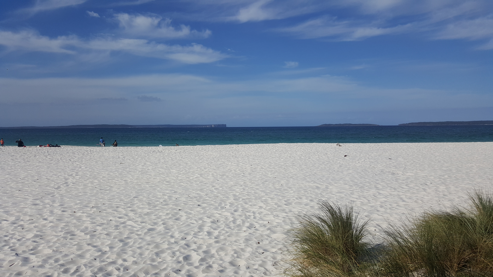

ALGERIE

Sahara
Le Sahara couvre la majorité du territoire algérien. Ce n’est pas qu’une mer de dunes de sable comme on a tendance à l’imaginer. Le Grand Sud algérien alterne entre paysages volcaniques (massif du Hoggar) et lunaires (Tassili N’Ajjer), plaines de pierres et (les Regs) et plaines de sable (les Ergs) d’où jaillissent parfois de superbes oasis.
Plus d'infos:

Plages
Soleil enivrant, mer transparente et plages de rêve… l’Algérie vous séduira avec ses innombrables atouts ! Tantôt à proximité des villes majeures, tantôt cachées en pleine nature, les 14 plus belles plages du pays constellent la côte méditerranéenne. L’Algérie n’a rien à envier aux plages des Caraïbes ou de Bali
Plus d'infos:
Montagnes
Les montagnes, forêts et villages de la Kabylie et des Aurès sont à voir au printemps ou à l'automne, lorsque la végétation se pare de couleurs éclatantes. La Kabylie, accessible depuis Tizi Ouzou, abrite le massif du Djurdjura, où quelques pistes de ski fonctionnent en hiver. Les Aurès, au sud de Constantine, sont sillonnés de magnifiques gorges et défilés, en particulier dans la région de Batna.
Plus d'infos: